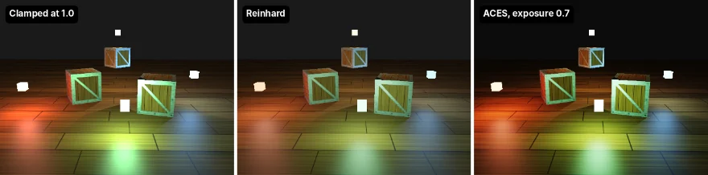

Advanced Lighting
HDR#
examples/Sources/15-HDRBloom, run with swift run HDRBloom. Download all examples or see how to run them.Color values written to an 8-bit texture are clamped to the 0 to 1 range. Put several bright lights in a scene and large areas add up to more than 1, get clamped, and turn into a featureless white patch. All the detail in the bright regions is lost.
High dynamic range rendering lets colors exceed 1 while the image is being built, and converts the result to a displayable range at the very end, in a step called tone mapping.
Floating-point render targets#
The scene is rendered into a texture with a floating-point format, which stores values far beyond 1 without clamping:
let descriptor = MTLTextureDescriptor.texture2DDescriptor(
pixelFormat: .rgba16Float, width: width, height: height, mipmapped: false)
descriptor.usage = [.renderTarget, .shaderRead]
descriptor.storageMode = .private
hdrColor = device.makeTexture(descriptor: descriptor)!
| Format | Notes |
|---|---|
.rgba16Float |
The standard choice. 16-bit half floats per channel. |
.rg11b10Float |
Half the memory, no alpha, slightly less precision. Good on mobile. |
.rgba32Float |
Rarely needed for color. |
Set the scene pipelines' color format to match, and render the scene as in Render Targets. The lighting shaders do not change. They simply stop being clamped.
Tone mapping#
A full-screen pass reads the HDR texture and maps it to the 0 to 1 range for the drawable.
The simplest operator is Reinhard, which divides each color by itself plus one. Bright values are squeezed together toward 1 and dark values are left nearly untouched:
fragment float4 fragment_tonemap(ScreenOut in [[stage_in]],
texture2d<float> hdrTexture [[texture(0)]],
sampler s [[sampler(0)]]) {
float3 hdr = hdrTexture.sample(s, in.uv).rgb;
float3 mapped = hdr / (hdr + 1.0);
return float4(mapped, 1.0);
}
The drawable should have an sRGB format, as set up in Gamma Correction, so the result is gamma-encoded automatically. Tone mapping always comes before gamma encoding.
Exposure#
A camera adapts to the brightness of a scene with its exposure. An exposure tone mapper gives us the same control:
float3 mapped = 1.0 - exp(-hdr * uniforms.exposure);
A low exposure reveals detail in bright areas and crushes the dark ones; a high exposure does the reverse. With it you can render a dim interior and a sunlit exterior with the same physical light values, changing only the exposure. Automatic exposure, or eye adaptation, computes the average brightness of the frame, for example from the smallest mip level of the HDR texture, and eases the exposure toward a target over time.
Filmic curves#
Reinhard tends to look washed out. Film-like curves keep more contrast and roll highlights off more gracefully. A popular compact fit to the ACES film curve, by Krzysztof Narkowicz:
static float3 acesFilm(float3 x) {
const float a = 2.51, b = 0.03, c = 2.43, d = 0.59, e = 0.14;
return saturate((x * (a * x + b)) / (x * (c * x + d) + e));
}
float3 mapped = acesFilm(hdr * uniforms.exposure);
The tone mapper is one of the biggest contributors to the overall look of a renderer. Try several.
A test scene#
Build a long tunnel from a stretched, inward-facing cube with one very bright light at the far end, with a color around (200, 200, 200), and a few dim colored lights along the walls. Without HDR the far end is a white blob. With HDR and exposure control, you can see the texture of the wall right up to the light.

Why it matters beyond bright lights#
- Bloom needs to know which pixels are brighter than white. See the next chapter.
- Physically based rendering uses real-world light intensities, which span a huge range.
- Post effects such as depth of field and motion blur look far more natural when computed on HDR values.
Displaying HDR directly#
Apple displays with Extended Dynamic Range (EDR) can show values brighter than standard white. A Metal layer opts in by using a floating-point drawable format (.rgba16Float), an extended linear color space, and wantsExtendedDynamicRangeContent = true on the CAMetalLayer. Values above 1.0 are then shown brighter than the UI's white, up to a headroom that the screen reports and that changes with brightness settings. You still tone map, but into the display's available range instead of 0 to 1. It is a worthwhile upgrade once the rest of the pipeline is in place.
Exercises#
- Add keys to raise and lower the exposure.
- Show Reinhard on the left half of the screen and ACES on the right.